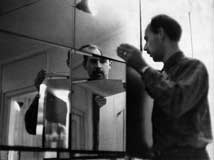

tautology
tautology
 nothing to see
nothing to see
 radical
art
radical
art
 tautology
tautology
 nothing to see
nothing to see
 radical
art
radical
art
(Absence.)
The perfect monochrome is a surface without any marks: uniform, textureless, polished: a mirror.
"Nothing" turns into "anything": the perfect monochrome throws the world back at the spectator.(Tautology.)
The mirror only reflects what is already there.
It can show anything, but it cannot make a difference.
It says: x = x.(Narcissism.)
The only exception is the thing that cannot be duplicated: the subject.
The mirror returns the gaze of the observer. The subject becomes an object.
(Fun.)
A mirror surface with a non-uniform orientation presents a multiplied, fragmented and/or distorted image of the world and the viewer. Automated cubism becomes a joke.
(Infinity.)
A closed optical loop between two or more mirrors multiplies an image ad infinitum.
Pistoletto's "Metrocubo d'Infinito" implements the thought experiment: What if there is no input image?
Les Expositions des Arts Incohérents
Detouche & Melandri: Mirror entitled "Quelques specimens des animaux embarqués par Noé dans son arche." (One of the exhibits in the "Musée semitique et semi-toc", 1883.)
Mirror entitled "Une bonne bille". [Date? Author?]
Mirror entitled "Portrait de tout le monde – cent francs à qui ne se reconnaît pas", 1889. [Author?]
Optical Effects
Heinz Mack: Ohne Titel, 1957
Getulio Alviani:
Rilievo Speculare, 1962
Louise Nevelson: Silent Motion, 1966
Adolf Luther: Hohlspiegel, 1969
Anish Kapoor:
Turning the World Inside Out, 1995
Isa Genzken:
Untitled, 2001
John Armleder:
Liberty Dome, 2002
Absence & Tautology
Michelangelo Pistoletto:
Person seen from the back, 1962
Robert Morris:
Untitled (Mirrored Cubes), 1965
Christian Megert: Spiegelwand, 1961
Joseph Kosuth: One and Three Mirrors, 1965To add:
Art & Language:
Untitled Painting, 1965.
[Four mirrors on canvas.]
Robert Smithson:
Mirage No.1, 1967
Giovanni Anselmo: Specchio,
1968. [inverted mirror]
Roy Lichtenstein:
Mirror Nr. 1, 1969
Gerhard Richter:
Spiegel, 1986
Ken Lum:
Photo Mirror (Sunset), 1997
Broken Mirrors
Christian Megert:
Scherbenspiegel, 1962/1963
Michelangelo Pistoletto:
Broken Mirror, 1978
Gunther Ücker, 2004
Infinity
Michelangelo Pistoletto:
Metrocubo d'Infinito, 1965/1966
Christian Megert:
Spiegelraum, 1968
Getulio Alviani: Interrelazione
Cromospeculare, 1969
Narcissism
Ben Vautier: "Je me suis regardé
dans ce miroir plus de 2 heures", 1966
Jeff Koons:
Christ and the Lamb, 1988
Rosemarie Trockel:
Profumo, 1990
Thomas Rentmeister:
Ohne Titel, 2000
Sylvie Fleury: Icone, 2001
Ottmar Hörl: ICH-Spiegel, 2004Il ne faut regarder ni les choses ni les personnes. Il ne faut regarder que dans les miroirs. Car les miroirs ne nous montrent que des masques.
Oscar Wilde, ca. 1900. [Philippe Julian: Oscar Wilde. London: Paladin, 1971, p.326.]
More Mirrors
|
Related Genres
|
Remko Scha, 2005/2007